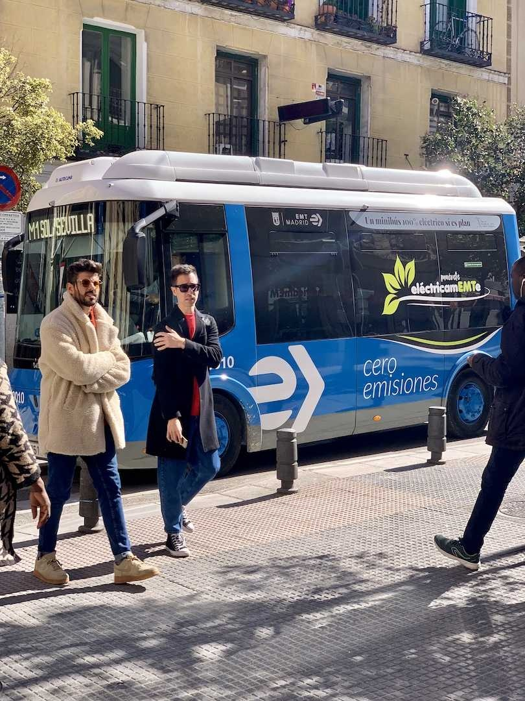
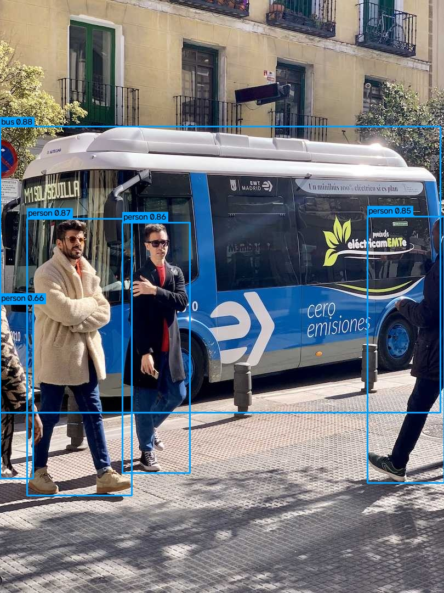
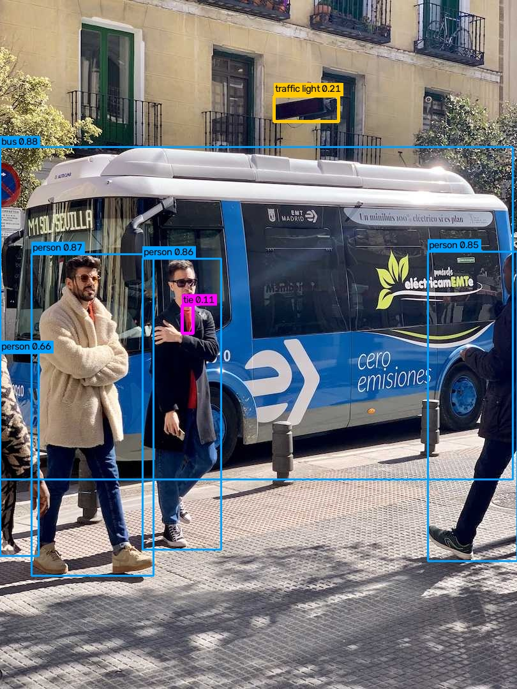
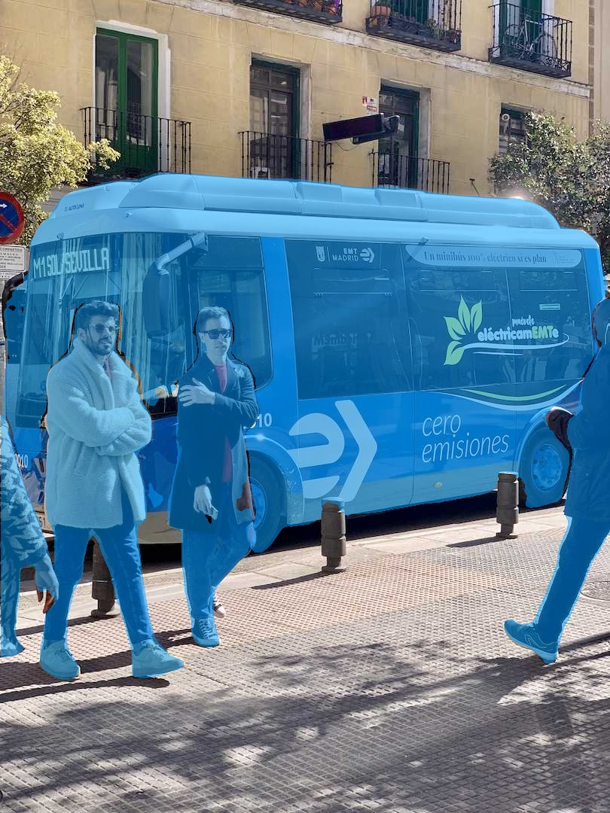
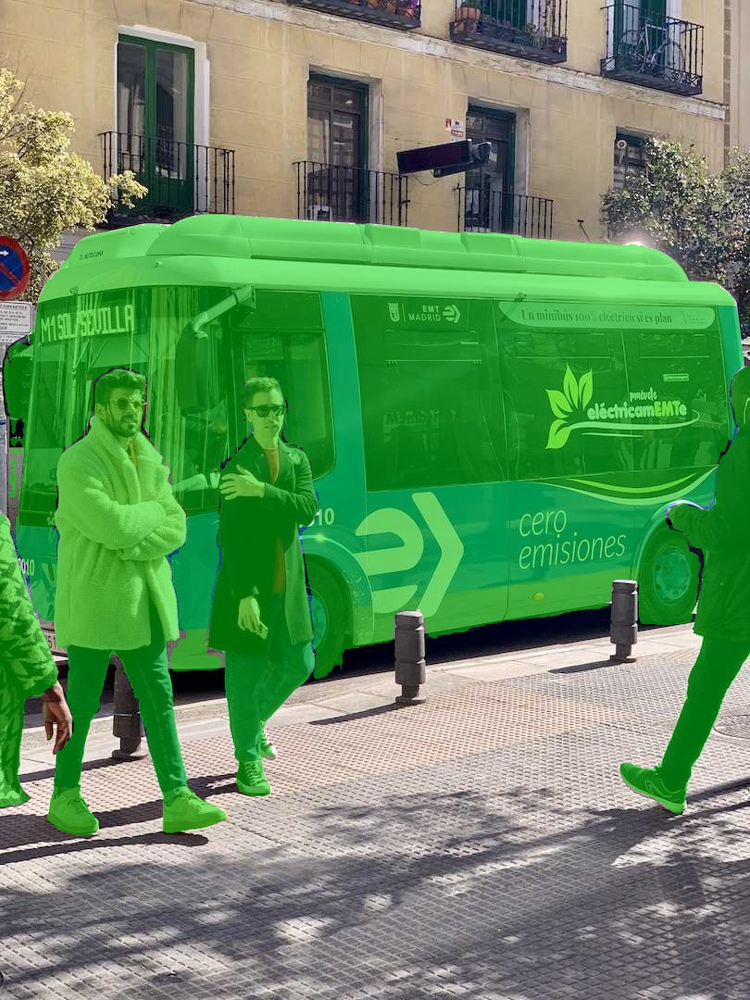
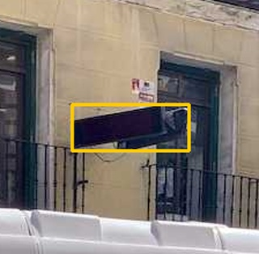
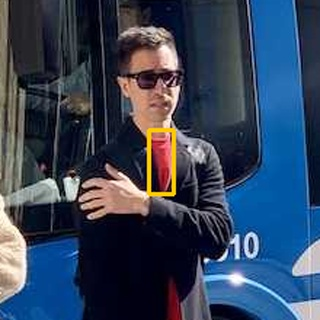
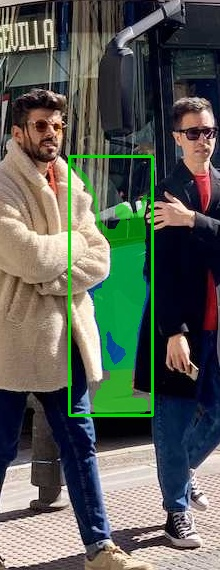
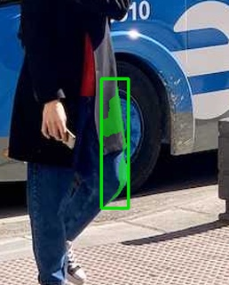
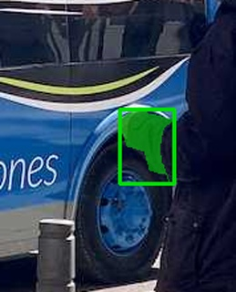

사진 전체를 훑는 대신 아래 5곳만 확인하면 됩니다. 모델끼리 결과가 다른 곳만 모았습니다. AI의 제안일 뿐이므로 사람이 맞음/아님을 표시해야 합니다.
처리 시간(CPU): 합계 17.99s — 1_baseline_det 9.57s · 1_baseline_seg 0.76s · 2_bigger_yolo 1.38s · 3_text_yoloe 0.94s · 4_sam 5.34s
글자 지목 단계: 실행함





| # | 종류 | 이유 | 잘라 본 그림 | 사람 확인 |
|---|---|---|---|---|
| 0 | 놓쳤을 수 있음 traffic light 0.21 | 보조 모델(bigger)만 찾음 - 기준선이 놓쳤을 수 있음 좌표 [428, 150, 530, 189] |  | □ 맞음 □ 아님 |
| 1 | 놓쳤을 수 있음 tie 0.11 | 보조 모델(text)만 찾음 - 기준선이 놓쳤을 수 있음 좌표 [284, 477, 301, 521] |  | □ 맞음 □ 아님 |
| 2 | 마스크 구멍일 수 있음 bus | SAM이 7,832px 를 더 칠함 - 기존 마스크의 구멍일 수 있음 좌표 [160, 466, 243, 725] |  | □ 맞음 □ 아님 |
| 3 | 마스크 구멍일 수 있음 person | SAM이 909px 를 더 칠함 - 기존 마스크의 구멍일 수 있음 좌표 [314, 623, 340, 747] |  | □ 맞음 □ 아님 |
| 4 | 마스크 구멍일 수 있음 person | SAM이 1,086px 를 더 칠함 - 기존 마스크의 구멍일 수 있음 좌표 [722, 543, 763, 599] |  | □ 맞음 □ 아님 |
| 물체 | 기존 마스크(px) | SAM 마스크(px) | SAM이 더 칠함 | SAM이 뺌 |
|---|---|---|---|---|
| bus | 255,375 | 264,292 | +13,581 | -4,664 |
| person | 49,302 | 47,278 | +443 | -2,467 |
| person | 33,411 | 33,196 | +1,229 | -1,444 |
| person | 21,311 | 21,274 | +1,163 | -1,200 |
| person | 11,100 | 9,799 | +344 | -1,645 |